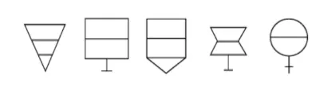
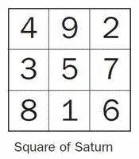
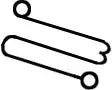
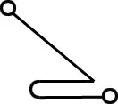

Astrology Grimoire
 Saturn
Saturn
Planetary Notes
Day: Saturday
Themes: Grounding, protection, stability, karmic lessons
Color: Indigo, black
Stones: Jet, onyx, hematite, smoky quartz
Herbs: Balm of Gilead, boneset, comfrey, cypress, dill, garlic, hawthorn, hyssop, patchouli, rosemary, St. John's Wort, valerian, vetiver
Greek Vowel Correspondences
- Alpha (A) = AH
- Omega (W) = OHW

The Planetary Seal of Saturn
Seal Symbolism
The Saturn seal features a curved scythe positioned opposite from the traditional sigil, and a ribbon that entwines the entire seal, these are the ties that bind. This heavy planetary force works whether we engage with it or not. Better to know the path than walk it blind.
Powers of Saturn
Saturn governs death, binding, time, the underworld, underground forces, darkness, decrease, the elderly, sleep, solitude, entropy, endings, and discipline. Many fear working with Saturn, and it is indeed heavy to work with, but its influence bears upon us regardless.
Applications of the Seal
The Saturn seal can be used in five primary ways:
Illumination: In Hermetics, Saturn is the gate to the 8th and 9th spheres. Saturn embodies death, one of the primary forces of the psyche. Much can be revealed in the solitude of a Saturnian retreat.
Financial: Cultivate discipline, cut away dross, and complete cycles. Saturn should be integral to any planetary work of financial sorcery, providing the structure and restraint necessary for lasting wealth.
Love: Saturn can be used to end bad relationships or help deal with pain and loss. Some invoke Saturn in binding love spells, though such work carries heavy consequences and is not recommended.
Wrath: If Mars is for warriors, Saturn is for assassins. Saturn is about binding and killing your target. Saturn and Mars combined, to bind and strike respectively, make a powerful combination.
Healing: Used with extreme care, Saturn can help kill off infections and tumors. It also provides strength to cope when things become terminal, offering the discipline to face death with dignity.
Geomantic Characters of Saturn
Saturn rules two geomantic figures, each bearing the weight of restriction and necessity. These characters can be etched into talismans, carved into candles, or inscribed on spell materials to bind, discipline, and bring the slow, irreversible force of endings and structure.
From Carcer

From Tristitia

The Magick Square of Saturn

Ceremonial Planetary Seals of Saturn
In the ceremonial tradition, these sigils are arranged within a double-ringed circle. The Seal is positioned at the top center, the Intelligence beneath it, and the planetary symbol to one side or below for visual balance. Lead is the traditional material for inscribing Saturn's ceremonial seals. The Intelligence is regarded as benevolent in nature, while the Spirit is regarded as malevolent. For this reason, only the Seal and Intelligence are incorporated into ceremonial magick circles.
Seal of Saturn
Omeliel, Anachiel
Intelligence of Saturn
Agiel

Spirit of Saturn
Zazel

Kabbalistic Correspondence
- Ruling Angel: Oriphiel
- Universal function: Supervision
- Spatial bearing: North
- Operation of the spirit: Patience and perseverance